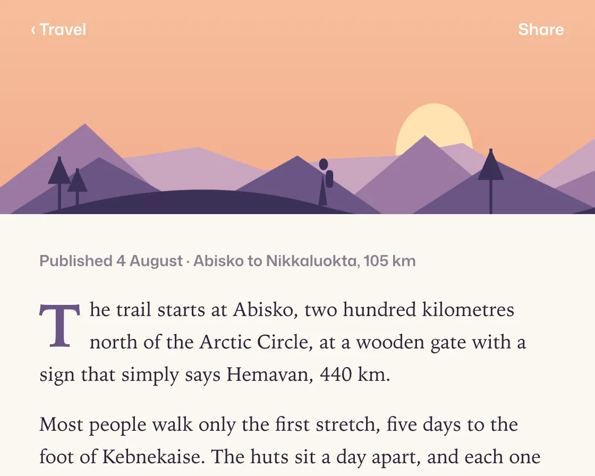

Parallax layers
Parallax layers is a DOM effect: layers move at speeds that fall with depth. One plain JavaScript file with no dependencies; add it with npx motion-library add parallax.

Open it live, tune it and copy the code
What is Parallax layers?
On scroll, far mountains barely move, the near ridge nearly keeps pace and the title drifts between.
How does Parallax layers work?
Each layer is pushed down by a share of the scroll, so its net speed falls with distance; that speed difference is what reads as depth.
How do I add Parallax layers to my website?
- In your project folder, run
npx motion-library add parallax. It writesanimations/parallax.js. Needs Node 18 or newer. - Import it and call it with a container element that has a size:
import fx from './animations/parallax.js'; const stop = fx(document.querySelector('#hero')); - Call
stop()to clean up, for example when a component unmounts.
Every setting below is also a flag, so you can install it already tuned: npx motion-library add parallax --depth 1.5.
What settings can I tweak?
| Setting | Flag | Default | Range | Step |
|---|---|---|---|---|
| Depth | --depth | 0.6 | 0 to 1.5 | 0.05 |
Specifications
- Renderer
- DOM (CSS and the Web Animations API)
- Category
- Scroll
- Dependencies
- None
- File size
- 8.4 KB, unminified
- Interactive
- Yes: it follows scrolling
- Reduced motion
- Respects prefers-reduced-motion
- Licence
- MIT-0: use it anywhere, no credit needed
Source code
// Parallax layers, on a long-form travel story: as the reader scrolls past the opening illustration, the far mountains barely move, the near ridge moves almost with the page, and the title drifts off in between.
// Each layer is pushed down by a share of the scroll, so its net speed falls with distance; the eye reads that difference in speed as depth. The page scrolls itself here (eased stops, like someone reading), and a real wheel or swipe takes over.
const PARAMS = { depth: 0.6 };
export default function (stage) {
const reduce = matchMedia('(prefers-reduced-motion: reduce)').matches;
const AH = 340, MINW = 400;
const ridge = (seed, amp, base, n) => {
let s = seed, d = `M0 ${base}`;
for (let i = 0; i <= n; i++) { s = (s * 9301 + 49297) % 233280; const x = (i / n) * 400, y = base - amp * (0.35 + 0.65 * (s / 233280)) * (i % 2 ? 1 : 0.55); d += ` L${x.toFixed(1)} ${y.toFixed(1)}`; }
return d + ' L400 300 L0 300Z';
};
// far to near: share of the scroll each layer is pushed back by (1 = stays put, 0 = moves with the page)
const layers = [
{ f: 0.92, svg: `<rect width="400" height="300" fill="url(#px-sky)"/><circle cx="292" cy="118" r="26" fill="#ffe2b0"/>` },
{ f: 0.78, svg: `<path d="${ridge(3, 70, 175, 9)}" fill="#c9a6bf"/>` },
{ f: 0.6, svg: `<path d="${ridge(11, 64, 205, 7)}" fill="#9b7aa3"/>` },
{ f: 0.38, svg: `<path d="${ridge(29, 50, 240, 6)}" fill="#6a5585"/>` },
{ f: 0.12, svg: `<path d="M0 262 C 70 244, 140 236, 210 250 S 330 268, 400 252 V300 H0z" fill="#3b3157"/><g fill="#3b3157"><path d="M214 251 l3 -16 l3 16z"/><circle cx="217.5" cy="230" r="3"/><rect x="219" y="233" width="5" height="9" rx="2"/></g><g stroke="#3b3157" stroke-width="2"><path d="M40 262 V226 M52 258 V232 M330 262 V222"/></g><g fill="#3b3157"><path d="M40 226 l-8 14 h16z M52 232 l-7 12 h14z M330 222 l-9 16 h18z"/></g>` },
];
const root = document.createElement('div');
root.className = 'px-root';
root.innerHTML = `<style>
.px-root { position: absolute; inset: 0; overflow: hidden; background: #fbf8f3; font-family: "Mona Sans", system-ui, -apple-system, sans-serif; }
.px-art { position: absolute; left: 0; top: 0; height: ${AH}px; transform-origin: 0 0; }
.px-scroll { position: absolute; inset: 0; overflow-y: auto; overflow-x: hidden; scrollbar-width: none; }
.px-scroll::-webkit-scrollbar { display: none; }
.px-bar { position: sticky; top: 0; z-index: 3; height: 40px; margin-bottom: -40px; display: flex; align-items: center; justify-content: space-between; padding: 0 22px; font-size: 11.5px; font-weight: 600; color: #fff; }
.px-bar-bg { position: absolute; inset: 0; background: #fbf8f3; box-shadow: 0 1px 0 #e6dfd3; opacity: 0; }
.px-bar span { position: relative; }
.px-bar .px-ink { position: absolute; inset: 0; display: flex; align-items: center; justify-content: space-between; padding: 0 22px; color: #2a2433; opacity: 0; }
.px-hero { position: relative; height: ${AH}px; overflow: hidden; background: #f3b892; }
.px-layer { position: absolute; left: 0; right: 0; top: -40px; height: ${AH + 80}px; will-change: transform; }
.px-layer svg { width: 100%; height: 100%; display: block; }
.px-title { position: absolute; left: 28px; right: 28px; top: 82px; color: #fff; will-change: transform, opacity; text-shadow: 0 1px 12px rgba(80,40,60,.25); }
.px-title small { font-size: 10.5px; font-weight: 700; letter-spacing: .14em; }
.px-title h1 { margin: 8px 0 8px; font: 600 38px/1.02 ui-serif, "Iowan Old Style", Georgia, serif; letter-spacing: -0.02em; max-width: 340px; }
.px-title p { margin: 0; font-size: 12px; font-weight: 560; opacity: .9; }
.px-body { position: relative; padding: 26px 28px 40px; color: #2a2433; font: 400 14px/1.62 ui-serif, "Iowan Old Style", Georgia, serif; max-width: 520px; margin: 0 auto; }
.px-body p { margin: 0 0 14px; }
.px-meta + p::first-letter { float: left; font-size: 3.1em; line-height: .86; padding: 4px 6px 0 0; font-weight: 600; color: #6a5585; }
.px-body blockquote { margin: 20px 0; padding-left: 14px; border-left: 3px solid #c9a6bf; font-size: 19px; line-height: 1.3; font-style: italic; color: #6a5585; }
.px-meta { font: 600 11px/1.4 "Mona Sans", system-ui, sans-serif; color: #8a7f8f; margin-bottom: 16px; }
</style>
<div class="px-art"><div class="px-scroll">
<div class="px-bar"><div class="px-bar-bg"></div><span>‹ Travel</span><span>Share</span><div class="px-ink"><span>Nine days on the Kungsleden</span><span>12 min</span></div></div>
<div class="px-hero">
<svg width="0" height="0" style="position:absolute"><defs><linearGradient id="px-sky" x1="0" y1="0" x2="0" y2="1"><stop offset="0" stop-color="#f7c59f"/><stop offset=".55" stop-color="#f2a98a"/><stop offset="1" stop-color="#e48b7d"/></linearGradient></defs></svg>
${layers.map(L => `<div class="px-layer"><svg viewBox="0 0 400 300" preserveAspectRatio="none" aria-hidden="true">${L.svg}</svg></div>`).join('')}
<div class="px-title"><small>TRAVEL · SWEDEN</small><h1>Nine days on the Kungsleden</h1><p>Words by Elin Ståhl · 12 min read</p></div>
</div>
<div class="px-body">
<div class="px-meta">Published 4 August · Abisko to Nikkaluokta, 105 km</div>
<p>The trail starts at Abisko, two hundred kilometres north of the Arctic Circle, at a wooden gate with a sign that simply says Hemavan, 440 km.</p>
<p>Most people walk only the first stretch, five days to the foot of Kebnekaise. The huts sit a day apart, and each one has a sauna, a small shop and a warden who has seen everything.</p>
<blockquote>By day three you stop checking the time. In July the sun does not set anyway.</blockquote>
<p>Rain comes sideways off the Tjäktja pass, then stops as if someone closed a door. Reindeer watch you from the snowfields, unimpressed.</p>
<p>On the last morning the valley opens toward Nikkaluokta and the road. Nobody in the group wants to be first to reach it.</p>
</div>
</div></div>`;
stage.append(root);
const art = root.querySelector('.px-art'), sc = root.querySelector('.px-scroll');
const els = [...root.querySelectorAll('.px-layer')], title = root.querySelector('.px-title');
const barBg = root.querySelector('.px-bar-bg'), barInk = root.querySelector('.px-ink');
const fit = () => {
const W = stage.clientWidth, H = stage.clientHeight, s = Math.min(H / AH, W / MINW) || 1;
art.style.width = W / s + 'px'; art.style.top = (H - AH * s) / 2 + 'px'; art.style.transform = `scale(${s})`;
};
const ro = new ResizeObserver(fit); ro.observe(stage); fit();
// Simulated reader: eases the page between stops and holds at each; a real wheel, drag or touch takes over for three seconds.
const stops = [[0, 0, 1100], [0.42, 1600, 900], [0.75, 1300, 1300], [1, 1100, 1000], [0, 1900, 300]];
const ease = t => t < 0.5 ? 4 * t * t * t : 1 - Math.pow(-2 * t + 2, 3) / 2;
let seg = null, si = 0, userUntil = 0, raf;
const take = () => { userUntil = performance.now() + 3000; seg = null; };
['wheel', 'touchstart', 'pointerdown'].forEach(e => sc.addEventListener(e, take, { passive: true }));
function drive(now) {
if (now < userUntil) return;
if (!seg) { const [at, dur, hold] = stops[si++ % stops.length]; seg = { from: sc.scrollTop, to: at * (sc.scrollHeight - sc.clientHeight), t0: now, dur, hold }; }
const k = seg.dur ? Math.min(1, (now - seg.t0) / seg.dur) : 1;
sc.scrollTop = seg.from + (seg.to - seg.from) * ease(k);
if (now - seg.t0 >= seg.dur + seg.hold) seg = null;
}
function frame(now) {
drive(now);
const y = Math.min(sc.scrollTop, AH), d = reduce ? 0 : PARAMS.depth / 0.6; // reduced motion: no depth offsets, the title still fades
els.forEach((el, i) => { el.style.transform = `translateY(${(y * Math.min(1, layers[i].f * d)).toFixed(2)}px)`; });
title.style.transform = `translateY(${(y * Math.min(1, 0.5 * d)).toFixed(2)}px)`;
title.style.opacity = Math.max(0, 1 - y / (AH * 0.4)).toFixed(3);
// the bar turns solid as the illustration leaves, and the story title takes over from the section name
const k = Math.min(1, Math.max(0, (y - AH * 0.7) / (AH * 0.25)));
barBg.style.opacity = barInk.style.opacity = k.toFixed(3);
barBg.nextElementSibling.style.opacity = barBg.nextElementSibling.nextElementSibling.style.opacity = (1 - k).toFixed(3);
raf = requestAnimationFrame(frame);
}
raf = requestAnimationFrame(frame);
return () => { cancelAnimationFrame(raf); ro.disconnect(); root.remove(); };
}